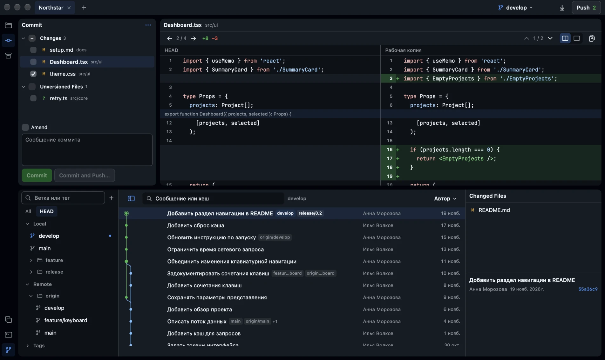

Branchline
GitHub
Git для macOS
Смотрите историю веток, сравнивайте изменения и делайте коммиты в нативном приложении для Mac.
Скачать для macOS
macOS 14+ · Apple Silicon и Intel
Загрузка откроется после первого подписанного релиза.
